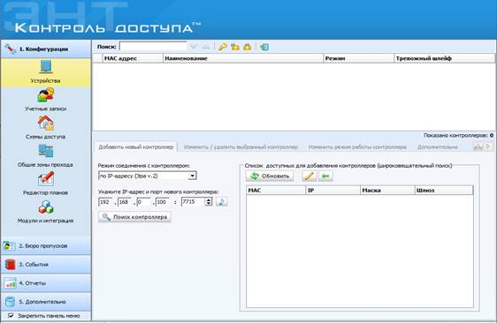

14. Желілік талдау.
Желілік контроллерде үлкен көлемді деректерді өңдеу
1. Контроллер туралы түсінік.
2. Турникеттің желілік
контроллері.
14.1 Контроллер туралы түсінік
Контроллер ағылшын
тілінен аударғанда controller -
реттегіш, басқару құрылғысы.
Контроллер –
электрондық және компьютерлік басқару құрылғысы.
Контроллер –
айнымалы және тұрақты ток қозғалтқыштарын
іске қосуға, жылдамдықты басқаруға, және
электрлік тежеуге арналған төмен вольтты электр аппараты.
Контроллер басқару тізбегіндегі электр кедергісін, қуат
тізбектерінің қосылу сызбаларын және электр қозғалтқыштарының
қоздыру тізбектерін өзгерту үшін қолданылады.
Контроллер әдетте қолмен немесе тұтқамен жұмыс
істейді; Серво қозғалтқыштары қашықтан басқару
үшін қолданылады. Құрылымдық жағынан
контроллер көп сатылы жалпақ, барабан немесе жұдырықшалы
контактілі ажыратқыштар болып табылады.
Турникеттің желілік контроллерінің мысалы ретінде ЭРА 500
желілік контроллері мысал ретінде алынды.
ENT КОНТРОЛЬ
ДОСТУПА бағдарламасы шағын фирмалардағы және ірі кәсіпорындардағы
қол жетімділікті бақылауға және жұмыс уақытын
есептеуге арналған. Кілттердің саны тек контроллердің мүмкіндігімен
шектеледі (500, 2 000 или 10 000). Бағдарлама «Эра новых технологий»
фирмасының ЭРА контроллері үшін арнайы жасалған және
басқа контроллерлермен жұмыс істемейді. Бағдарламада қызметкерлер
мен кілттердің тізімі жүргізіледі және сонымен бірге қызметкерлердің
әр түрлі топтары үшін әртүрлі өту
кестелерін (200 данаға дейін) құру мүмкіндігі бар. Жұмыс
уақыты да есепке алынады, өтулерді бақылау мен фотомодуль мүмкіндігі
бар. Сондай-ақ айта кететін жағымды
толықтырулар бар. Мысалы, бірнеше кіру нүктелерін бір өту
аймағына біріктіру, қайталап өтуге тыйым салу мүмкіндігі,
жұмысшыларға жұмыста болған уақыты туралы
есептерді автоматты түрде жіберу. Қолдануға ыңғайлы интерфейс (бағдарлама
Windows ортасында жұмыс істейді), жүйеге ақпаратты енгізу және
іздеу үшін қолдануға жеңіл, сонымен қатар әр түрлі
есептер қалыптастыру кезінде ENT КОНТРОЛЬ ДОСТУПА бағдарламасы
алмастырылмайтын көмекші құрал. MS Word, MS Excel бағдарламаларында
мәліметтерді импорттау мүмкіндігі, бұл енгізуді жеңілдетеді.
Ал бағдарламадан мәліметтерді MS Word, MS Excel-ге экспорттау мүмкіндігі
кез-келген деректерді ыңғайлы түрде сақтауға және
басып шығаруға мүмкіндік береді.
Ethernet
желісімен қосылған желілік контроллер «Эра-500»
«Эра новых технологий» компаниясымен жұмыскерлер саны 500-ден аспайтын кеңселерде
немесе мекемелерде қол жетімділікті бақылауды қамтамасыз ету үшін
дайындалған. Ол 30000 оқиғаға дейінгі ақпаратты өзінің
жадында сақтай алады. Құрылғы Wiegand-4-тен
Wiegand-64-ке дейінгі интерфейс арқылы бір толыққанды өту
нүктесіне немесе Touch Memory арқылы екі нүктеге қызмет
көрсетуге қабілетті. Wiegand - қол
жетімділікті басқару және басқару жүйелерінде кеңінен
қолданылатын идентификатор (карта) оқырман мен контроллер арасындағы
қарапайым сымды байланыс интерфейсі. Өткізулерді сәйкестендіру
Proximity карталарына немесе чипі бар карталарға негізделген. Құрылғыдағы
«ашық коллектор» шығысы электромеханикалық және электромагниттік
құлыптар мен шығу батырмасын басқаруға арналған.
Сонымен қатар, контроллер турникеттермен өзара әрекеттеседі
(яғни, картақабылдағышпен жабдықталған
модельдермен).
«Эра-500»
50 өту кестесін және олар үшін 50 уақыт режимін қолдайды.
Құрылғының жиынтығында пайдаланушының жеке
талаптарына сай өзгертілетін ақысыз меншікті бағдарламалық
жасақтама бар. Бағдарламалық жасақтама есептерді
автоматты түрде құруға және уәкілетті тұлғаларға
таратуға арналған құралдарды қамтиды, үзінділерді
жазудың фрагменттерін көру мүмкіндігі бар үшінші
тараптың IP бейне жүйелерімен интеграциялық бағдарлама.
[44]
https://www.entpro.ru/podderzhka/baza-znanij/206
Сурет
19 - Эра-500
Контроллерінің бағдарламасын орнату
14.2
Турникеттің
желілік контроллері
ENT
КОНТРОЛЬ ДОСТУПА бағдарламасы шағын фирмалардағы және
ірі кәсіпорындардағы қол жетімділікті бақылауға және
жұмыс уақытын есептеуге арналған. Кілттердің саны тек
контроллердің мүмкіндігімен шек-теледі (500, 2 000 или 10 000). Бағдарлама
«Эра новых технологий» фирмасының ЭРА контроллері үшін арнайы жасалған
және басқа контрол-лерлермен жұмыс істемейді. Бағдарламада
қызметкерлер мен кілттердің тізімі жүргізіледі және
сонымен бірге қызметкерлердің әр түрлі топтары үшін
әртүрлі өту кестелерін (200 данаға дейін) құру
мүмкіндігі бар. Жұмыс уақыты да есепке алынады, өтулерді
бақылау мен фотомодуль мүмкіндігі бар.
Бағдарламаны орнату және жұмысқа
кірісу
Жүйелік
талаптар, бағдарламаның тиімді және сенімді жұмыс
істеуі үшін компьютер келесі сипаттамаларға ие болуы керек:
· Процессор – Intel Celeron Dual Core G530 төмен емес;
·
Оперативті жады–1ГБ аз емес;
·
Қаттыдискідегі бос орын – 100 Мб аз емес;
·
Манипулятор
«тінтуір»;
·
Желілік карта;
·
Операциялық жүйе – Windows XP жәнежоғары;
·
Экранның ең
төменгі рұқсаты (разрешение) 1280х800;
·
FireBird 2.1*деректерқоры және одан
жоғары (стандартты жеткізілімге енгізілген);
·
WinPcap *кітапханасы (стандартты жеткізілімге енгізілген).
* - бағдарламаның сервер бөлігі
болатын компьютерге ғана орнатылуы керек
Бағдарламаны орнату
Орнату
дискісінде setup_client.exe. файлы бар. setup_client.exe файлы клиенттік бағдарламалық
қамтамасыздандыруды СКУД кез келген компью-теріне орнатады. (Кіруді басқару
жүйесі) [45].

Сурет
20 - Контроль доступа терезесінің сипаттамасы
ENT
КОНТРОЛЬ ДОСТУПА басты мәзірі панельдің сол жағында орналасады
және мынадай алты бөлімдерден тұрады:
1. Конфигурация –
Конфигурация.
2. Бюро пропусков –
Пропусктер бюросы.
3. События - Жағдайлар.
4. Отчеты - Есептер.
5. Дополнительно - Қосымша.
6. Справка - Анықтама.
Кесте 3
ENT КОНТРОЛЬ ДОСТУПА басты мәзірі
|
Бөлімдер |
Пункттері |
Функционалдық қызметі |
|
1. Конфигурация
|
Құрылғы
(Устройство) |
Бұл сіздің
жүйеңіздегі контроллерлер тізімін қамтиды. Сіз жаңа
контроллерлерді қосуға, олардың параметрлерін өзгертуге
және оларды жоюға мүмкіндігіңіз бар. |
|
Есептік жазба (Учетные
записи) |
Осы пунктте бағдарламаға
кіру үшін есептік жазба енгізіледі. Мұнда сіз жаңа есептік
жазба қосып, бұрыннан бар пайдаланушының аты мен құпия
сөзін өзгерте аласыз, сондай-ақ бұрын енгізілген
есептік жазбаларды өшіре аласыз. |
|
|
Қол
жетімділік схемасы (Схемы доступа) |
Осы тармақты
таңдау арқылы сіз бұрын енгізілген контроллерлер негізінде
жалпы қол жетімділік схемасын құра аласыз. Бұл
деректер пайдаланушыларға қол жеткізу схемаларын тағайындау
үшін «Пайдаланушылар» бөлімінде қолданылады. |
|
|
Жалпы өту
аймақтары (Общие зоны прохода) |
Бұл тармақта
сіз қайталанатын өту мүмкіндігін шектеу үшін жалпы
аймақ құра аласыз. Қайталап өтуді шектеу
функциясы қосылған контроллерлерді ғана біріктіруге болады. |
|
|
Жоспар редакторы
(Редактор планов) |
Бұл тармақты
таңдау арқылы мекеме жоспарларын жүктей аласыз және
оларға контроллерлердің орналасуын белгілей аласыз. Сонымен қатар,
бұл деректер кейіннен «Оқиғалар» (Бақылау) бөлімшесінің
«Мониторинг» бөлімінде қолданылады. |
|
|
Модульдер және
интегралдау (Модули и интеграции) |
Модульдер мен
интеграциялар» тармағында сіз үшінші тарап өнімімен
интеграцияны таңдай аласыз. Қазіргі уақытта «SVN Line»,
«SVN Trassir» бейнебақылау жүйелерімен интеграцияны қолдануға
мүмкіндік бар. Паспортты тану қозғалтқыштары «Abbyy
Passport Reader», «PassportVision». Биометриялық санағыштар
«Smartec ST-FR020EM» және «ZK Teco MA300». |
|
|
2.
Пропуск-тер бюросы (Бюро пропусков) |
Қолданушылар (Пользователи) |
Бұл тармақта сіз пайдаланушыларды (сіздің ұйымыңыздың
қызметкерлері мен қонақтарын) енгізесіз. Пайдаланушыларға
қол жеткізу құқығы мен электронды кілттер де тағайындалады. |
|
Кілттер (Ключи) |
Осы тармақта кілттер (өтуге арналған карталар)
енгізіледі. Бұл деректер пайдаланушыларға кілттерді тағайындау
үшін «Пайдаланушылар» бөлімінде қолданылады. |
|
|
Графики доступа (Графики доступа) |
Осы тармақты таңдау арқылы сіз жұмыс кестесін құра
аласыз. Бұл деректер пайдаланушыларға қол жеткізу кестесін
тағайындау үшін «Пайдаланушылар» бөлімінде қолданылады. |
|
|
Қызметі/Бөлімі (Должности/Подразделения) |
Бұл тармақта
бөлім аттары мен қызметтері енгізіледі, олар пайдаланушы
деректерін енгізу кезінде қолданылады. |
|
|
Ауытқу құжаттары (Документы отклонений) |
Осы тармақты таңдау арқылы сіз Т-13 есебін құру
үшін қолданылатын ауытқу құжаттарын енгізе
аласыз. Олардың көмегімен қызметкердің жұмыс
орнында болмау себептері және жұмысқа осы уақытты қосу
мәртебесі туралы мәліметтер енгізіледі |
|
|
Автотранспорт (Автотранспорт) |
Бұл тармақта
бағдарламаға көлік құралдары қосылады және олар
пайдаланушылармен байланыстырылады. Бұл деректер пайдаланушыларға
көлік құралын тағайындау үшін «Пайдаланушылар»
бөлімінде қолданылады. |
|
|
3.
Жағдай-лар (События) |
Мониторинг (Мониторинг) |
Осы тармақта сіз нақты уақыт режимінде жүйелік
оқиғаларды көрсетілген параметрлермен көре аласыз. |
|
Жағдайлар журналы ()Журнал событий |
Осы тармақты таңдау арқылы сіз таңдалған
кезеңдегі барлық жүйелік оқиғаларды көре
аласыз. |
|
|
Хабарландырулар (Уведомления) |
Осы тармақты таңдау арқылы сіз бағдарламада
келу немесе кету туралы хабарлама жедел түрде пайда болатын
пайдаланушыларды таңдай аласыз. |
|
|
Хабарламалар жіберу (Рассылка уведомлений) |
Осы тармақта сіз электрондық пошта немесе sms арқылы
қызметкердің өтуі, кіруі және шығуы туралы
хабарлама жібере аласыз. (Бұл функция мектептер үшін ыңғайлы,
өйткені ата-аналар балаларының сабаққа қатысуы
туралы ақпаратты оперативті түрде ала алады). |
|
|
4.Есептер
(Отчеты) |
Есептер мен есептерге арналған графиктер (Отчеты и графики для
отчетов) |
Бұл тармақта берілген параметрлер бойынша есептердің
бірнеше түрлері жасалады. |
|
5.Қосымша
(Допольнително) |
Мәліметтер базасымен жұмыс
(Работа с базой данных) |
Осы тармақты таңдау арқылы сіз дерекқордың
сақтық көшірмесін жасай аласыз. Сондай-ақ, деректерді
өңдеу жылдамдығын арттыру үшін резервтік көшірмесін
жасағаннан кейін оқиғалар журналын тазарту ұсынылады
(мысалы, өткен жылдардағы деректерді оқиғалар
журналынан жою) [46]. |
Бақылау сұрақтары:
1. Желілік контроллердің атқару қызметі қандай және түрлері мен бір-бірінен
ерекшеліктерін атаңыз.
2. Программаға қандай жүйелік аппараттық-программалық
талаптар қойылады?
3. ENT КОНТРОЛЬ ДОСТУПА
программасының қандай ерекшеліктері бар?